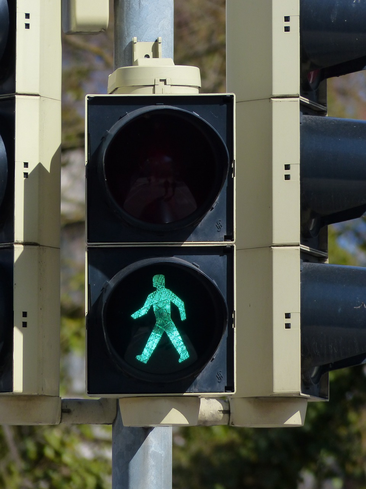
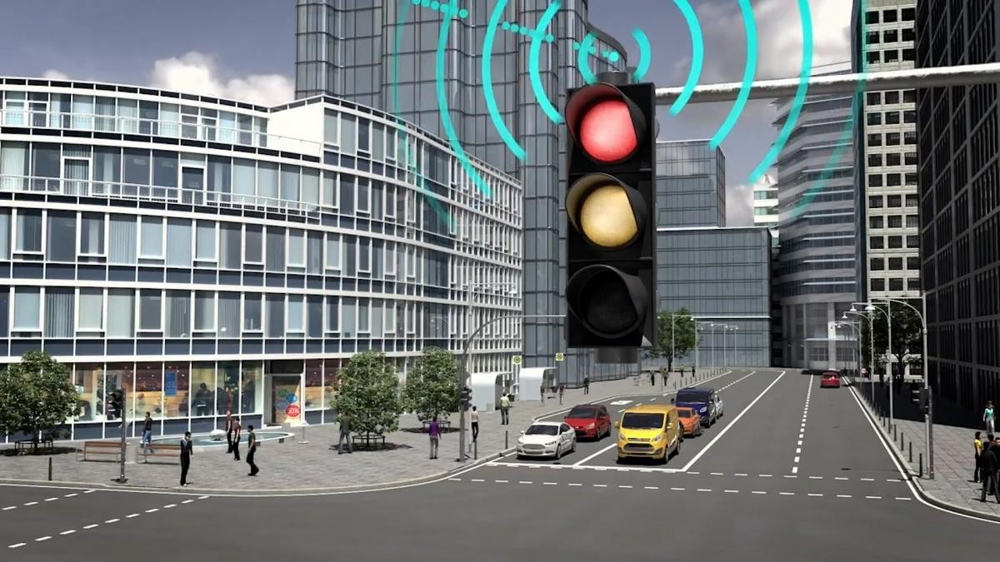
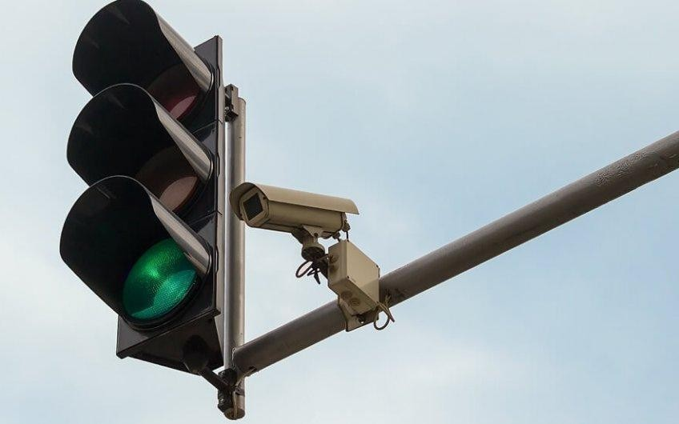
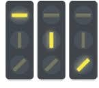
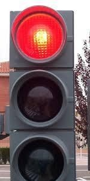
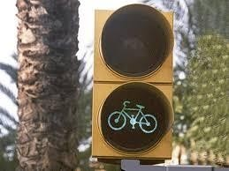

Busqueda de Información
Tipos de semáforos:
- Semáforo peatonal.
- Semáforo inteligente.
- Semáforo con cámara.
- Semáforo para tranvías.
- Semáforo con luces circulares.
- Semáforo para ciclomotores.
1- Semáforo peatonal.
El semáforo peatonal funciona en vez de con tres luces, con dos, que son dos peatones, uno rojo que representa que tiene que parar y otro verde que representa q puede pasar.
2- Semáforo inteligente.
El semáforo inteligente recoge información de su entorno y regula el tráfico mediante sensores tecnológicos.
3- Semáforo con cámara.
Tiene una cámara para poder detectar cuando un vehículo se salta el semáforo en rojo, actúa como un radar.
4- Semáforo para tranvías.
Son semáforos exclusivos para los tranvías que tienen franjas amarillas que señalan cuando puede pasar el tranvía y cuando no.
5- Semáforo con luces circulares.
Hacen el funcionamiento de un semáforo normal y corriente pero esta vez con luces circulares.
6- Semáforo para ciclomotores.
Estos semáforos son exclusivamente para los ciclomotores y hacen el funcionamiento de un semáforo normal y corriente
